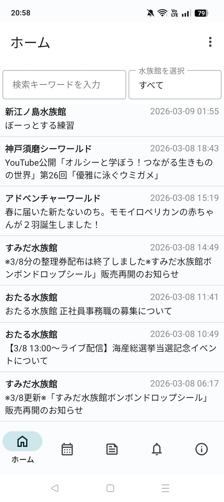
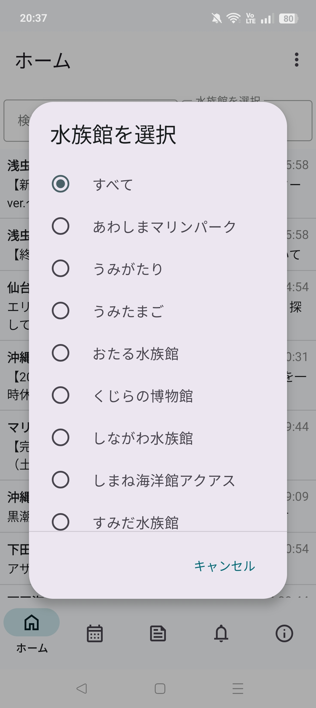
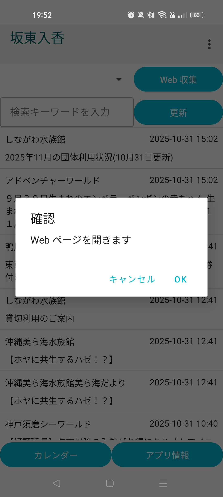
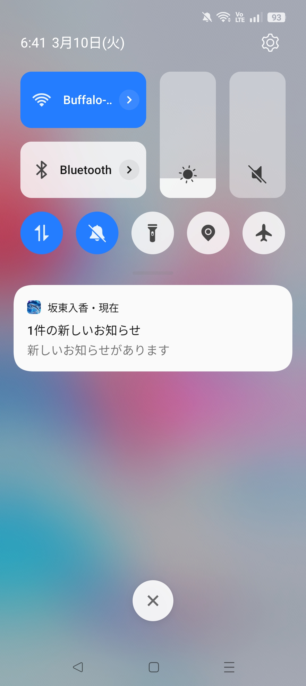

もう探し回らない。水族館の最新ニュースや記念日を「ギュッ」と集約。
本アプリの仕様は今後変わることがあります。あくまでもイメージとしてご覧ください。
お知らせを SNS のタイムラインのように一覧表示できます
お知らせを検索することもできます。検索キーワードが部分一致するお知らせを表示します。
表示したい水族館を選択し、表示させたい水族館を絞り込むことができます
お知らせをタップすると、情報源の Webpage にアクセスすることができます
新たなお知らせを定期的に通知します
お知らせの通知間隔は変更可能です
ユーザー情報の取り扱いに関する重要な事項を記載しています。
アプリの利用条件、禁止事項、免責事項などが記載されています。
開発協力: しゃち (X: @Orca_Earth_)
このアプリ（以下「本アプリ」）におけるユーザー情報の取り扱いについて、以下の通りプライバシーポリシー（以下「本ポリシー」）を定めます。
本アプリが取得する情報およびその利用目的は以下の通りです。
取得する情報: 広告識別子、クラッシュログ、利用状況に関する統計情報
利用目的: サービスの提供、改善、新機能の開発、利用状況の分析、および適切な広告の表示のため。
本ポリシーにおける「個人情報」とは、個人情報保護法にいう個人情報を指すものとします。本アプリでは、氏名、住所、電話番号など、特定の個人を識別できる情報は直接取得しません。
本アプリは、法令に定める場合を除き、取得したユーザー情報をあらかじめユーザーの同意を得ることなく第三者に提供しません。ただし、次項に定める外部サービス提供事業者へは、利用目的の達成に必要な範囲内で情報を提供することがあります。
本アプリは、利用状況の分析や広告配信のため、以下の外部サービスと連携し、情報を外部に送信します。各サービスの情報の取り扱いについては、それぞれのプライバシーポリシーをご確認ください。
| 連携サービス名 | サービス提供者 | 目的 |
|---|---|---|
| 現在、提携しているサービスはございません | --- | --- |
| --- | --- | --- |
開発者は、取得した情報を厳重に管理し、漏洩、滅失、または毀損の防止のために必要かつ適切な安全管理措置を講じます。
開発者は、法令の改正、本アプリの機能変更、またはその他必要に応じて、本ポリシーを変更することがあります。変更後のプライバシーポリシーは、本アプリのウェブサイトまたはアプリ内に掲載された時点から効力を生じるものとします。
本ポリシーに関するご質問や、取得した情報の開示・訂正・利用停止等のご請求については、以下のお問い合わせ先にご連絡ください。
開発者は、本アプリの利用により生じたいかなる損害についても、一切の責任を負いません。本アプリは、ユーザーが利用する時点において提供可能な現状有姿で提供されるものとし、その完全性、正確性、特定目的への適合性について、いかなる保証も行いません。
本アプリに関する著作権その他一切の権利は開発者に帰属します。本規約は、ユーザーに対し、本アプリの利用を許諾するものであり、権利の譲渡を意味するものではありません。
ユーザーは、本アプリの利用にあたり、以下の行為を行ってはならないものとします。
ユーザーは、本アプリを利用するために必要なスマートフォン端末、通信機器、オペレーティングシステム、通信手段及び電力などを、自己の費用と責任において用意するものとします。
開発者は、必要と判断した場合、ユーザーに事前の通知なく、いつでも本規約を変更できるものとします。本規約の変更後、ユーザーが本アプリを利用した時点で、変更後の規約に同意したものとみなされます。